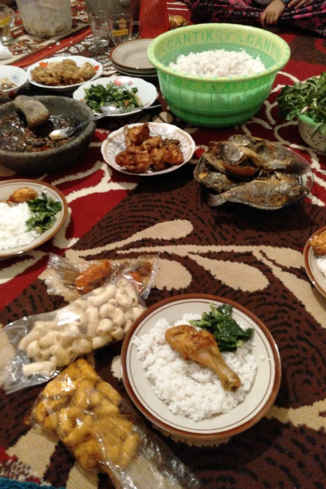
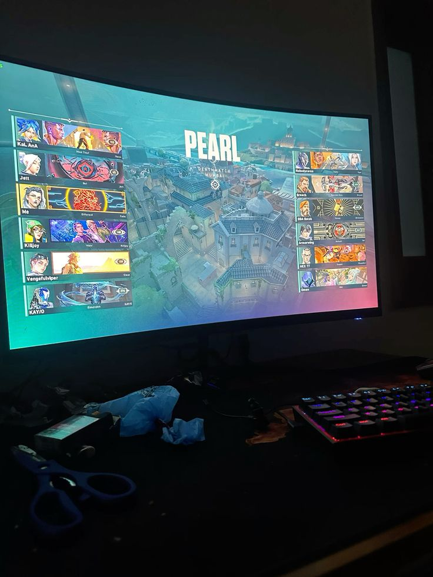
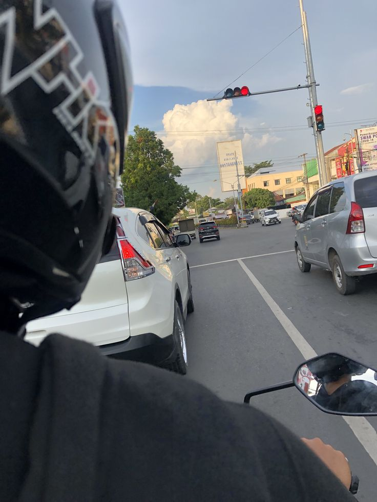
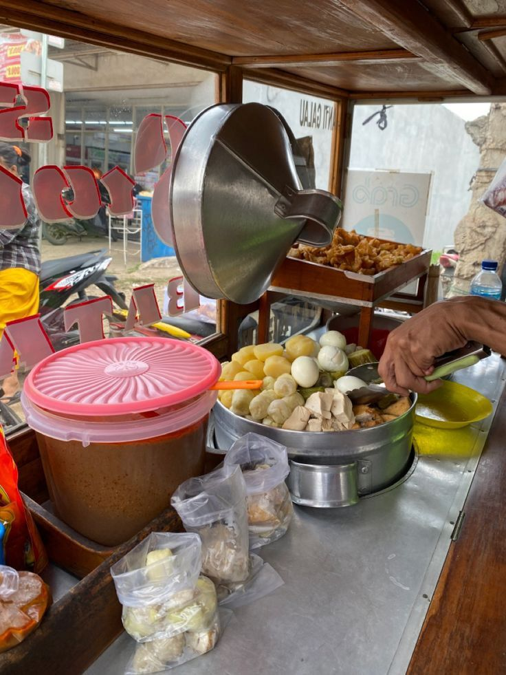
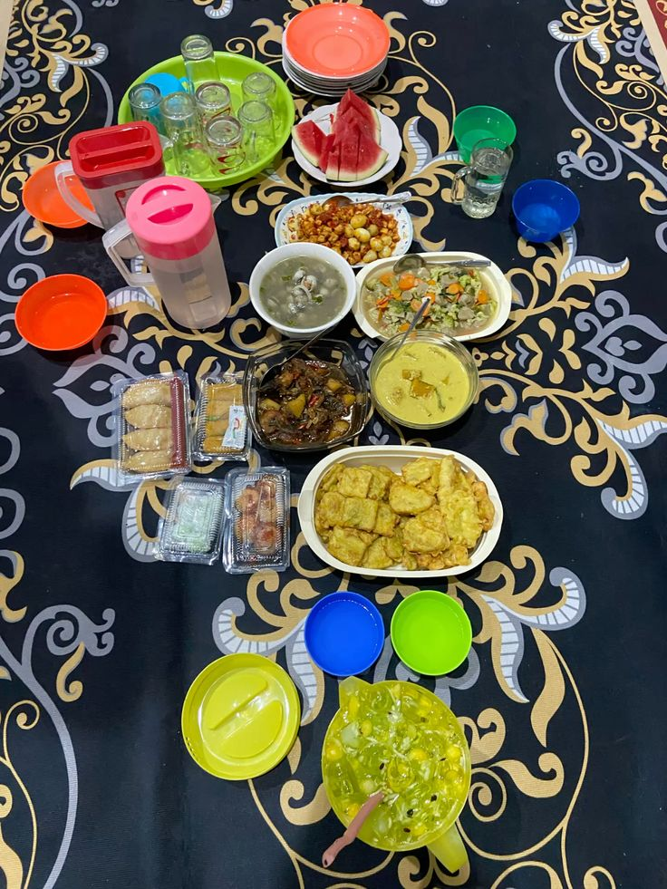
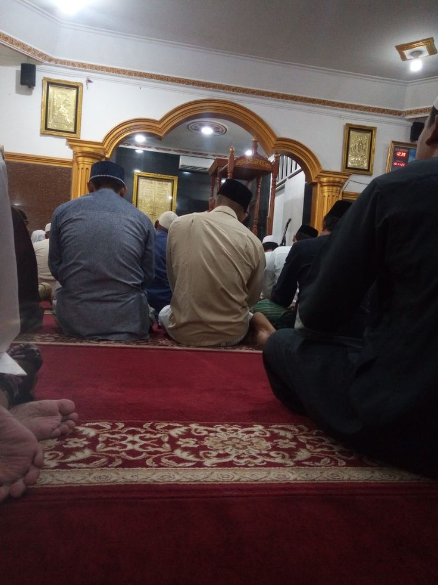

Website ini dibuat buat sharing kegiatan aku selama 1 hari penuh di bulan Ramadan, dari sahur sampai tidur lagi. Selain itu, website ini juga jadi bagian dari tugas TIK supaya bisa belajar bikin website yang simpel tapi tetap menarik.
18/03/2026
Perkenalan
2. Kegiatan Sahur
Aku bangun pagi sekitar jam 03.30 untuk sahur. Setelah itu aku langsung makan bersama keluarga. Sahur jadi momen sederhana tapi penting, karena dari sini kita dapat tenaga untuk puasa seharian.

Makan sahur bersama
3. Pagi
Setelah sahur dan istirahat sebentar, sekitar jam 06.10 aku mulai aktivitas pagi dengan main game Valorant. Ini jadi cara buat santai sebelum lanjut ke kegiatan lainnya.

Valorant
4. Siang
Jam 13.39 aku jalan santai bareng sepupu buat ngisi waktu. Cuaca siang lumayan panas, jadi makin kerasa lagi puasa. Tapi ya tetap santai aja, yang penting ga ngelakuin hal yang bikin capek.

Jalan Jalan
5. Ngabuburit
Sore hari aku ngabuburit beli siomay buat buka nanti. Banyak juga yang lagi cari takjil, dan bau makanan udah mulai kerasa, jadi ya makin lapar.

Ngabuburit
6. Buka Puasa
Pas buka, aku langsung makan sama minum. Minuman dingin langsung kena, segarnya kerasa banget. Makanannya juga jadi lebih enak dari biasanya. Habis puasa seharian, ya jelas beda.

Buka Puasa
7. Salat Tarawih
Malam hari aku melaksanakan sholat tarawih. Suasananya terasa lebih tenang dan beda dari hari biasa. Walaupun badan agak capek, tetap dijalani sampai selesai.

Tarawih
8. Tidur Malam
Sekitar pukul 20.50, setelah semua kegiatan selesai, aku langsung istirahat dan tidur malam. Badan udah capek setelah seharian puasa dan aktivitas, jadi tidur terasa lebih cepat dan nyenyak dari biasanya.